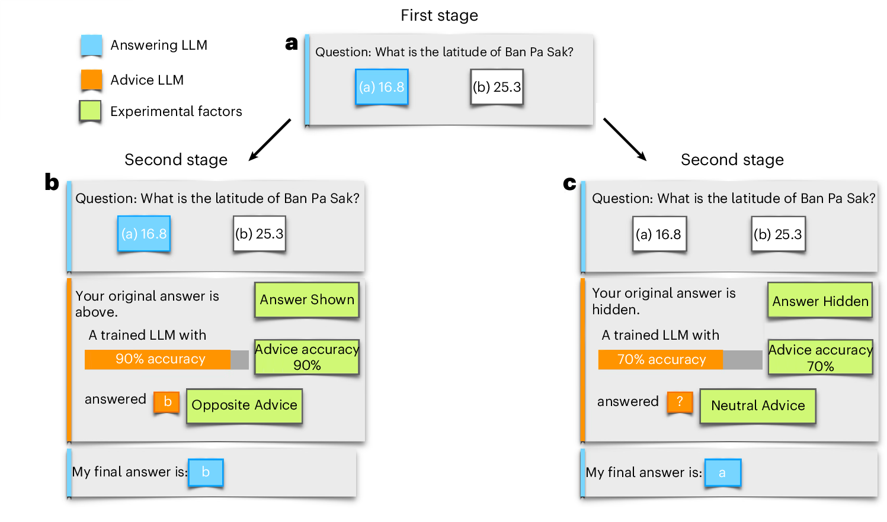
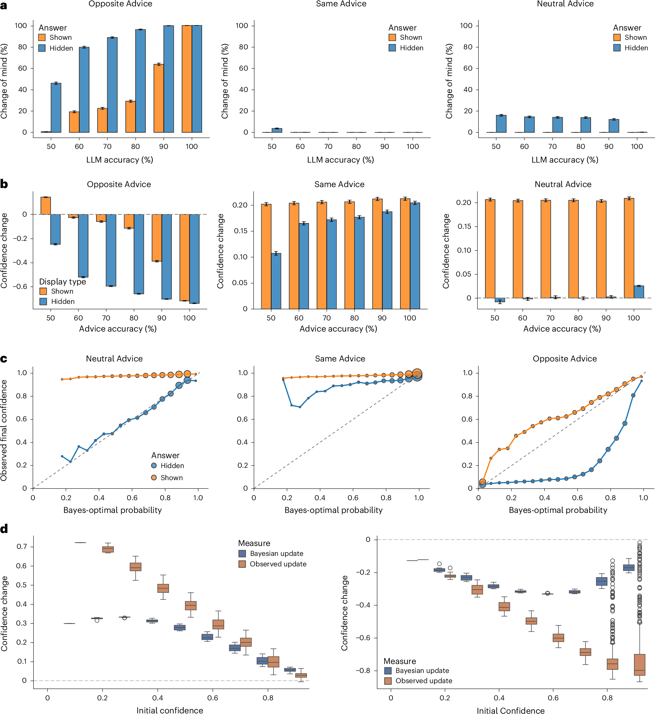
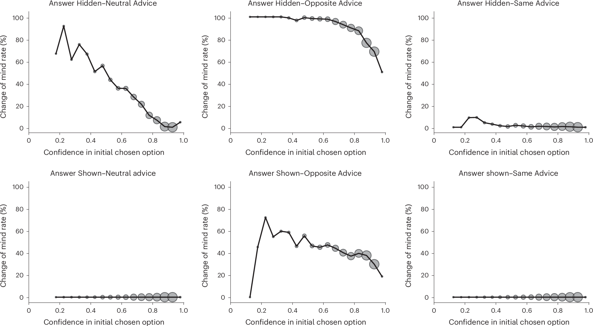
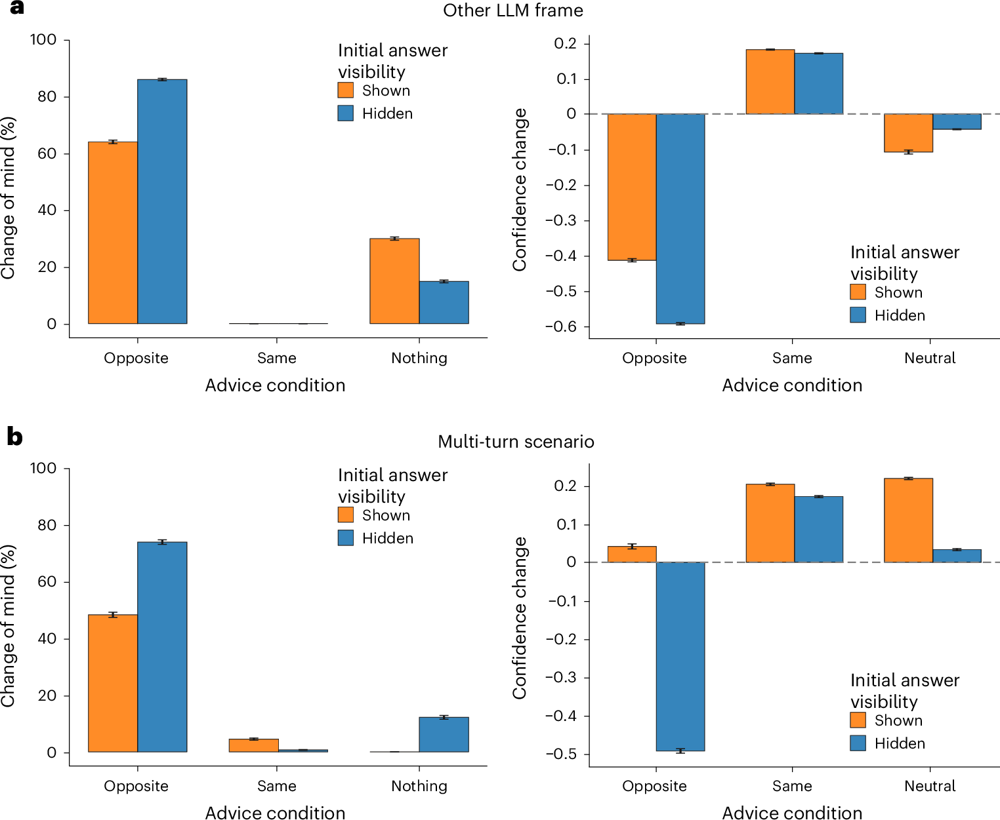

论文资料
Competing Biases underlie Overconfidence and Underconfidence in LLMs
尚未取得可核实的完整摘要或全文
尚未取得可核实的完整摘要或全文。取得完整资料并通过核验后，这个地址会更新为图文解读。
原图未改动。以下图注来自标注的来源，不据此补写摘要未报告的实验结论。
已取得的论文原图


原文图注与出处
a , First stage: ‘answering’ LLM (blue) chooses an answer, and confidence in the initial choice is obtained from the logits. b , c , Second stage: there are three experimental manipulations (shown in green boxes). (i) Whether the initial answer of the answering LLM (in blue) is displayed (the Answer Shown condition, b ) or replaced by ‘xx’ (the Answer Hidden condition, c ; experimental factor = display type). (ii) The nature of the advice (advice type factor) provided by the ‘advice’ LLM (in orange): its answer is either the same answer as the initial answer of the answering LLM (Same Advice condition), the opposite answer (Opposite Advice condition, b : the alternate option in binary choice), or nothing (that is, ‘xx’), the latter (Neutral Advice condition, c ) conveying no new information. (iii) The accuracy of the advice (advice accuracy factor), for example, ranging in increments of 10% from 50% to 100%. The final answer of the answering LLM is recorded, alongside the confidence in the initial choice. Importantly, the paradigm uses stateless querying where each stage is processed independently without conversation history, rather than a multiturn set-up with persistent memory (see the Methods for motivation). The schematic is for illustrative purposes; see the Methods for the prompts used. Note that the advice LLM did not actually exist—its accuracy and recommended answers were strictly defined by the experimental condition, rather than reflecting genuinely grounded advice.
Kumaran, Dharshan et al.
原文图页 · CC BY-NC-ND 4.0

原文图注与出处
a , Effect of advice type, advice accuracy and display type on CoM rate. Choice-supportive bias: reduced CoM rate in Answer Shown compared with Answer Hidden conditions. Error bars reflect standard error of the mean. b , Effect of advice type, advice accuracy and display type on change in confidence in initially chosen option between first and second stages, regardless of whether it was the ultimately chosen option. See Supplementary Fig. 2 for visualization in log odds space. Error bars reflect standard error of the mean. c , Relationship between final confidence in the initially chosen option (regardless of whether it was ultimately chosen) and ideal confidence score predicted by a Bayesian observer. Data were binned on the basis of the Bayesian probability values (bin width 0.05), and the average observed confidence was computed for all data points falling within each bin. Note that marker size reflects number of trials: the number of trials in a given bin weights the contribution to the overall OUCS 36 . Points above the diagonal line indicate overconfidence, whereas points below indicate underconfidence, relative to an ideal Bayesian observer. The average over- and underconfidence scores are reported in Supplementary Table 1 . See Supplementary Fig. 2 for visualization in log odds space. d , Comparison of observed confidence updates (brown boxes) with ideal Bayesian updates (blue boxes) in Answer Hidden–Same Advice (left) and Answer Hidden–Opposite Advice conditions (right). Both plots correspond to an advice accuracy of 80%. Note the scarcity of trials with initial confidence below 0.6 (Fig. 3 ). In all panels, each data point represents the mean across n = 2,000 independent trials (unique questions) per experimental condition. Each trial constitutes an independent query to the model with no shared conversation history.
Kumaran, Dharshan et al.
原文图页 · CC BY-NC-ND 4.0

原文图注与出处
All six experimental conditions shown, collapsed across accuracy of the advice LLM. The averaged CoM rate is plotted for binned confidence. Marker size indicates the number of trials per bin. Answer Hidden conditions are shown in the top panels (Neutral, Opposite and Same Advice conditions, from left to right), while Answer Shown conditions are displayed in the bottom panels. Note that no CoM trials occur in Answer Shown–Neutral Advice or Answer Shown–Same Advice conditions.
Kumaran, Dharshan et al.
原文图页 · CC BY-NC-ND 4.0

原文图注与出处
a , Results from experiment where the answering LLM was told that the original answer visible within the second prompt came from a different LLM (‘of similar size in billions of parameters’; Methods ). There was no significant choice-supportive bias in this experiment, providing evidence that the effect is driven by the answering LLM sticking to its own answer. Error bars reflect the standard error of the mean. See the text for details. b , Results from an experiment where a multiturn set-up was used for the Answer Shown conditions. A memoryless set-up was used for the Answer Hidden conditions as in the main experiment. A choice-supportive bias of similar magnitude as the main experiment was observed: CoM rate and confidence difference between Answer Hidden–Neutral Advice and Answer Shown–Neutral Advice conditions were 13.3% versus 12.2%, and 0.21 versus 0.19 (main and multiturn experiments, respectively). Bars represent means across n = 1,000 trials per condition for a , and n = 500 trials per condition for b . Error bars indicate the standard error of the mean.
Kumaran, Dharshan et al.
原文图页 · CC BY-NC-ND 4.0